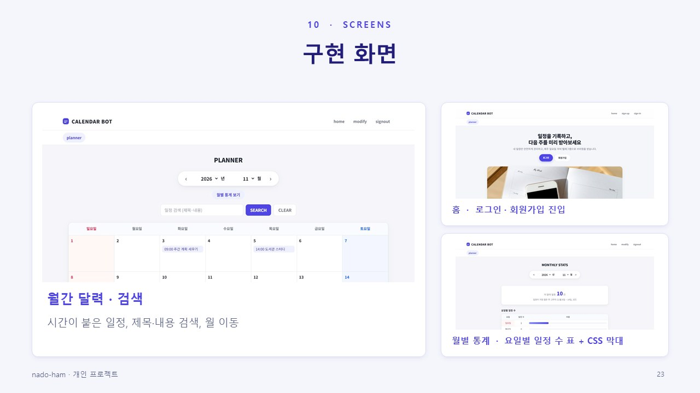
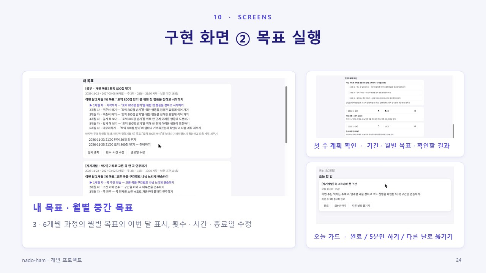
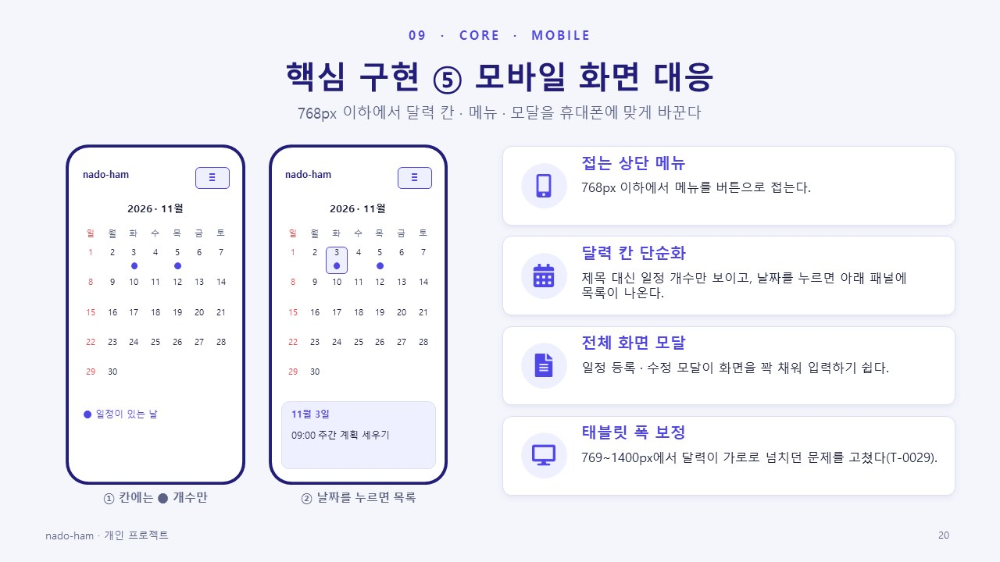

1차 개인 프로젝트 · 2026.11
일정을 기록하고,
다음 주를 미리 받아보세요
일정을 등록해 두고도 다시 열어 보지 않으면 놓칩니다. 매주 일요일 21:00에 다음 주 일정을 텔레그램으로 보내고, 장기 목표를 오늘 할 수 있는 행동으로 바꿔 주는 개인 일정 관리 웹 서비스입니다.
- Java 17
- Spring Boot
- Spring Security
- JPA + MyBatis
- MySQL
- Thymeleaf
- Telegram Bot API
실행하면 이런 화면이 나와요
MAIN SCREEN · planner / goal 탭을 눌러 보세요※ 실제 nado-ham 프로그램을 실행해 가져온 화면입니다(달력·목표 색 겹침·오늘 카드·주간 보기 모두 실제 코드). 위쪽 planner / goal 탭, 월 이동, 주간 보기, 월별 통계를 눌러 볼 수 있고, 일정은 데모라 저장되지 않아요. 일정·목표 내용은 예시입니다.
핵심 기능
KEY FEATURES주간 브리핑 (텔레그램)
연동 코드로 봇과 계정을 연결하면 일요일 21:00에 다음 주(월~일) 일정을 날짜순으로 보냅니다. '지금 보내기', 수신 켜기/끄기 지원.
일정 관리 달력
월간·주간 보기, 시작·종료 시간, 이미지 첨부, 제목·내용 검색, 월별 요일 통계. 목표 활동이 일정 위에 색으로 겹쳐 보입니다.
목표 실행 캘린더
운동·공부·자기개발 과정을 고르면 가능한 요일·시간에 맞춰 첫 주 활동을 배치. 오늘 탭에서 완료 / 5분만 하기 / 다른 날로 옮기기.
알림과 주말 회고
활동 시각에 텔레그램 알림(중복 방지·최대 3회 재시도). 한 주가 끝나면 "3회 중 2회 실천"을 보여주고 다음 주 계획을 조정.
보안
CSRF 보호, 본인 일정만 접근(남의 번호는 404), 연속 5회 로그인 실패 시 10분 잠금, 이미지가 아닌 파일 업로드 거부.
회원·관리자·모바일
가입 후 관리자 승인(PRE_USER → USER), 관리자 지표 화면, 768px 이하 접는 메뉴와 전체 화면 모달.
규모
NUMBERS실제 구현 화면
SCREENSHOTS

